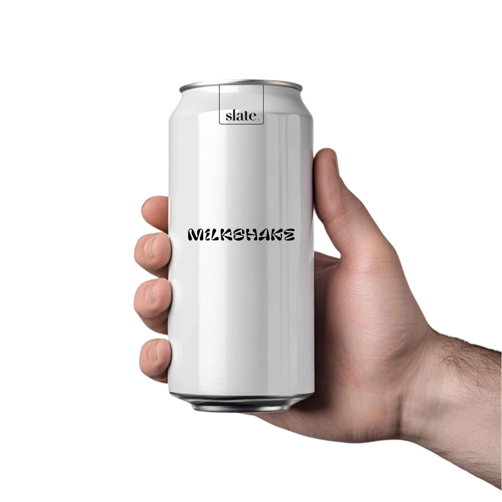

Fuel Your Day with Delicious, Keto-Friendly Protein Shakes
At Slate Milk, we believe that great taste and nutrition should go hand in hand. Our high-protein, low-sugar, lactose-free shakes and protein iced coffees are crafted for those who want a healthier way to fuel their day. Whether you’re looking for the best protein shakes for weight loss, a high-protein shake for meal replacement, or just a delicious protein chocolate milk, we’ve got you covered.
Our whey-based protein shakes are perfect for fitness enthusiasts and busy professionals. With lactose-free high-protein shakes that are easy on digestion, you no longer have to worry about discomfort after enjoying a rich and creamy drink. Plus, our protein iced lattes offer the perfect pick-me-up, combining high protein content with smooth coffee flavors to keep you energized throughout the day.
If you’re looking for protein shakes that are good for you, Slate Milk delivers best-in-class nutrition without compromising taste. Our commitment to using high-quality ingredients ensures that every sip is packed with goodness. Whether you're in search of the best protein shakes to gain muscle or a high-protein shake for weight loss, our products fit seamlessly into your routine.

Try Slate Today – High-Protein, Low-Sugar, and Delicious
Looking for where to buy Slate Milk? Our products are available online and in major retailers, making it easier than ever to stock up on protein drinks that match your lifestyle. If you're in Canada, you'll be happy to know that Slate Milk Canada is growing in popularity, with options like Slate Chocolate Milk Canada becoming a favorite among health-conscious consumers.
We offer a variety of flavors, including sugar-free protein chocolate milk for those watching their sugar intake and plant-based protein chocolate milk for those seeking dairy-free alternatives. If you love coffee, our protein iced coffee lineup, including the best protein iced coffee and protein iced latte, delivers a bold coffee taste with the benefits of high-protein content.
For fitness lovers, our best workout protein shake provides muscle-repairing nutrients, while our best protein shakes to gain muscle help you achieve your fitness goals faster. And if weight management is your focus, our protein shakes for weight loss and high-protein shakes for meal replacement keep you full and satisfied without extra calories.
At Slate Milk, we’re redefining protein shakes with better ingredients, better taste, and better nutrition. Whether you’re searching for the best protein shakes, lactose-free high-protein shakes, or a delicious protein chocolate milk, Slate is the brand that delivers. Try Slate today and experience better fuel for a healthier life.
Why Choose Slate?
For Fitness Enthusiasts & Athletes
Looking to build muscle? Our best protein shakes to gain muscle contain whey protein and essential amino acids to support muscle recovery and growth. Post-workout, grab a best workout protein shake to refuel and repair your body.
For Weight Management & Healthy Living
If weight loss is your goal, our protein shakes for weight loss help curb cravings while providing essential nutrients. Try our high-protein shakes for meal replacement for a satisfying and nutritious alternative to high-calorie meals.
For Coffee Lovers
Need a caffeine boost? Our best protein iced coffee and protein iced latte options deliver rich coffee flavor with the added benefits of protein. Enjoy the smooth taste of protein drinks with real coffee and no sugar spikes.
For Those Seeking Dairy Alternatives
We understand that not everyone can handle dairy, which is why we offer lactose-free high-protein shakes and plant-based protein chocolate milk for those looking for dairy-free, high-protein options.
Try Slate today and experience better protein, better coffee, and better nutrition!